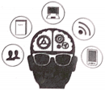

2019年北京市中考英语试题 · 阅读下列 第21、22、23、24、25、26、27、28、29、30、31、32、33题
三、阅读下列短文，根据短文内容，从短文后各题所给的A、B、C、D四个选项中，选择最佳选项．（共26分，每小题2分）
A
Experiencing China
Mike，Canada I spent three months with my host family（接待家庭） in China．It was a lifetime experience．I was able to experience Chinese living and culture，from basic Tai Chi to Beijing Opera．I even visited a famous traditional Chinese medicine hospital．Now I have a better understanding of Chinese culture． |
Joanna，Australia I stayed with my host family for five months．My host mother is a Chinese teacher and she is really warm-hearted．With her help，my Chinese has improved a lot．And I have got used to a new culture．My favorite part of the experience was sharing my feelings in China with her． |
Bill，America My host mother is a wonderful cook! She makes me all kinds of traditional Chinese dishes．They are tasty and I like them very much．Just like me，my host parents love to learn about different cultures．They often ask me questions about life in America． |
Cindy，Germany Recently I took part in a program to study Chinese．I lived with a host family in China for six months．My host sister is a really hardworking student．It was amazing to see how she made progress in English．And a close relationship has developed between us． |
21．Who visited a traditional Chinese medicine hospital？（ ）
A．Mike． B．Joanna． C．Bill． D．Cindy．
22．How long did Joanna stay with her host family in China？（ ）
A．Three months． B．Four months． C．Five months． D．Six months．
23．Cindy thinks her host sister is ．（ ）
A．a wonderful cook B．a responsible doctor
C．a warm-hearted teacher D．a hardworking student
B
Blue Lightning
 Sally loved cars more than anything else．This spring she thought of building a go-kart to enter for the Go-Go Race．So she asked her dad for help．
Sally loved cars more than anything else．This spring she thought of building a go-kart to enter for the Go-Go Race．So she asked her dad for help．
"Well，" he said．"How about this： you do some research first and then come back to me with a design．"
A week later，Sally brought her notes and drawings to Dad．She named her go-kart "Blue Lightning"．Dad looked over her work，thinking．"Well，that's interesting，" he said．"Have a try．Just build Blue Lightning as you've designed．"
Over three weekends of hard work，Sally turned her design into a real，working go-kart and painted it light blue．Dad asked her to take it for a test drive．Sally agreed．After she did that，Sally drove back to Dad．"Well，" she said．"Now I know why you wanted me to have a test drive．"
"Oh，do you？" he said．"Please share．"
"When I drove fast，there was a lot of push back，" she said．"I think it's because of the lightning bolt （闪电） shape．"
"Very good!" Dad said．
"So，why didn't you tell me about that problem in the first place？" Sally asked．Dad laughed．"Where's the fun in that？ If you give a man a fish，he'll eat for a day．But if you teach a man to fish，he'll eat for a lifetime．"
Sally said，"I see．Anyway，designing is half the fun !"
Dad smiled．"Good．Sometimes，learning happens during the process．We learn how to do something right by doing it a few times first and making mistakes along the way．"
That encouraged Sally and she worked even harder．When she showed Dad her new go-kart，he nodded with pride．
Finally came the race．Sally wasn't worried about whether she would win-in her mind，she had already won，by building something better than ever before．
24．Sally thought of building a go-kart to ．（ ）
A．practice driving B．enter for a race C．play with friends D．do some research
25．What did Sally's dad ask her to do after she built the go-kart？（ ）
A．To have a test drive． B．To take a good rest．
C．To give it a cool name． D．To paint it light blue．
26．Sally's story mainly tells us that ．（ ）
A．winning a race is important B．fishing brings us a lot of fun
C．driving experience is necessary D．learning happens during the process
C
Sometimes it seems that time is flying．Perhaps it doesn't need to feel this way．Our experience of time can be possibly changed．By understanding the psychological （心理学的） processes behind our different experiences of time，we might be able to slow down time a little．
One basic law of psychological time is that time seems to slow down when we're exposed（接触） to new environments and experiences．The law is caused by the relationship between our experience of time and the amount of information our minds process．The more information our minds take in，the slower time seems to pass．
It follows，then，that we have different experiences of time in different situations．In some situations，our life is full of new experiences．Our minds process a lot of information and time seems to slow down．In other situations，we have fewer new experiences and the world around us becomes more and more familiar（熟悉的）．We become insensitive to our experience，which means we process less information，and time seems to speed up．
How can we slow down time？ Here are two suggestions．
Firstly，since we know that familiarity makes time pass faster，we can expose ourselves to as many new experiences as possible．We can give ourselves new challenges，meet new people，and expose our minds to new information，hobbies and skills．This will increase the amount of information our minds process and expand （增加） our experience of time．
Secondly，and perhaps most effectively，we can give our whole attention to an experience-to what we are seeing，feeling，tasting，smelling or hearing．This means living through our senses rather than through our thoughts．For example，on the way home，focus your attention outside of yourself，instead of thinking about the problems you have to deal with．Look at the sky，or at the buildings you pass，traveling among them．This open attitude to your experiences helps take in more information and also has a time-expanding effect．
To a certain degree，we can understand and control our experience of time passing．It's possible for us to slow down time by expanding our experience of time．
27．According to the writer，we can expand our experience of time by ．（ ）
A．going to bed on time B．traveling to new places
C．having dinner as usual D．printing the same materials
28．What can we learn from the passage？（ ）
A．Being familiar with the world around helps us get more information．
B．Understanding psychological time makes life pass more quickly．
C．We can take in more information by living through our senses．
D．We should build a stronger relationship between time and us．
29．Which of the following would be the best title for the passage？（ ）
A．Slow Down Time B．Only Time Will Tell
C．Race Against Time D．Time Will Not Come Twice
D

How Much Can We Afford to Forget？ In 2018，Science magazine asked some young scientists what schools should teach students．Most said students should spend less time memorizing facts and have more space for creative activities．As the Internet grows more powerful，students can access （获得） knowledge easily．Why should they be required to carry so much of it around in their heads？
Civilizations（文明）develop through forgetting life skills that were once necessary．In the Agricultural（农业的）Age，a farmer could afford to forget hunting skills．When societies industrialized，the knowledge of farming could be safe to forget．Nowadays，smart machines give us access to most human knowledge．It seems that we no longer need to remember most things．Does it matter？
Researchers have recognized several problems that may happen．For one，human beings have biases（偏见），and smart machines are likely to increase our biases．Many people believe smart machines are necessarily correct and objective，but machines are trained through a repeated testing and scoring process．In the process，human beings still decide on the correct answers．
Another problem relates to the ease of accessing information．When there were no computers，efforts were required to get knowledge from other people，or go to the library．We know what knowledge lies in other brains or books，and what lies in our heads．But today，the Internet gives us the information we need quickly．This can lead to the mistaken belief-the knowledge we found was part of what we knew all along．
In a new civilization rich in machine intelligence，we have easy access to smart memory networks where information is stored．But dependency on a network suggests possibilities of being harmed easily．The collapse of any of the networks of relations our well-being（健康）depends upon，such as food and energy，would produce terrible results．Without food we get hungry； without energy we feel cold．And it is through widespread loss of memory that civilizations are at risk of falling into a dark age．
We forget old ways to free up time and space for new skills．As long as the older forms of knowledge are stored somewhere in our networks，and can be found when we need them，perhaps they're not really forgotten．Still，as time goes on，we gradually but unquestionably become strangers to future people．
30．Why are smart machines likely to increase our biases？（ ）
A．Because they go off course in testing and scoring．
B．Because we control the training process on them，
C．Because we offer them too much information．
D．Because they overuse the provided answers．
31．The ease of accessing information from the Internet ．（ ）
A．frees us from making efforts to learn new skills
B．prevents civilizations from being lost at a high speed
C．misleads us into thinking we already knew the knowledge
D．separates the facts we have from those in the smart machines
32．The word "collapse" in Paragraph 5 probably means “ ”．（ ）
A．a sudden failure B．the basic rule C．a disappointing start D．the gradual development
33．What is the writer's main purpose in writing this passage？
A．To question about the standards of information storage．
B．To discuss our problems of communication with machines．
C．To stress the importance of improving our memorizing ability．
D．To remind us of the risk of depending on machines to remember．